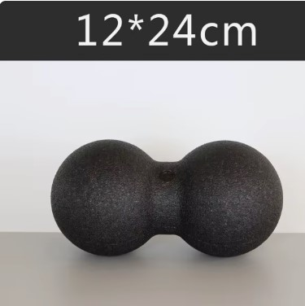
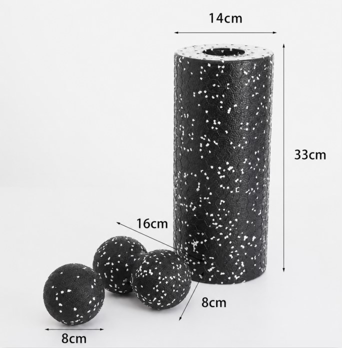
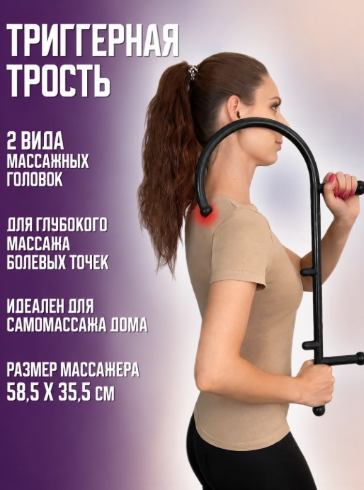
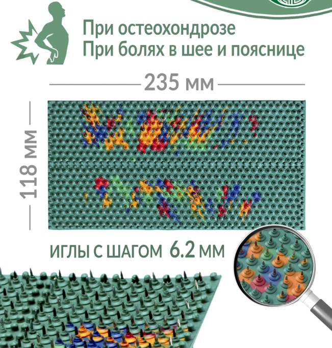

Чем лучше всего убирать триггеры
В стартовом наборе ты уже попробовал прокатываться полотенцем, бутылкой или трубой. Это работает и даёт первое облегчение. Но как временное решение.
Чтобы пройти метод полноценно и быстрее, нужны нормальные инструменты. Они достают глубже, работают точнее и не разваливаются под весом. Стоят копейки по сравнению с тем, что ты уже отдал врачам. Напомню главное: ноги прорабатываем в первую очередь, именно они чаще всего тянут поясницу за собой.
1. Массажные роллы и мячи
Это твой главный инструмент. Ложишься на него, прокатываешь зажатую мышцу своим весом, и триггеры расходятся.

Сдвоенный мяч-косточка 24 на 12 см — твой главный помощник. Я сам пользуюсь им чаще всего. Он большой и удобно ложится вдоль позвоночника: спина попадает в ложбинку между мячами, а они продавливают мышцы по бокам, не трогая сам позвоночник. Им же хорошо проходить ягодицы и крупные мышцы.
➡️ Заказать сдвоенный мяч 24×12
Набор поменьше: ролл и два мяча. Добивает то, что большим мячом не достать:

- Большой цилиндрический ролл (толстый, с отверстием внутри). Для крупных мышц: бёдра, ягодицы и верх спины.
- Сдвоенный мяч-косточка, 16 на 8 см. Для более узких и точных мест (верх спины, шея).
- Мяч, 8 см. Добивать отдельные точки, куда ролл не достаёт (под лопаткой, глубоко в ягодице).
➡️ Заказать набор на AliExpress
Для икр понадобится ещё одна мелочь. Тонкого ролла в наборе нет, но его легко заменить: возьми в магазине сантехники пластиковую трубу диаметром 50 мм. Она отлично подходит для прокатки икр и стоит копейки.
2. Крюк-массажёр
Рукой ты не достанешь до самых вредных точек: под лопаткой, в глубине поясницы. А именно там часто и сидит причина боли.

Крюк дотягивается куда нужно и продавливает точку с нужной силой, без напряжения. Берёшь в руку, цепляешь за плечо или спину и нажимаешь. Незаменимая вещь для точечной работы.
3. Аппликатор Ляпко
Это коврик с тупыми иголками. Ложишься на него спиной и просто лежишь.

Иголки разгоняют кровообращение в зажатой зоне. Через время становится легче, боль утихает. Хорошо помогает в дни отдыха между прокатками, когда мышца ещё болит и трогать её рано.
➡️ Заказать аппликатор Ляпко на Ozon
Закажи всё одним заходом
Чтобы потом не ждать по очереди, закажи три вещи сразу. А пока посылки в пути, продолжай работать тем, чем начал.
Когда инструменты будут на руках, перейдём к самому главному: как прокатывать спину и ноги правильно, без ошибок. Это в следующем шаге.